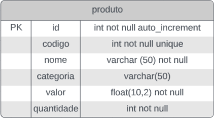

Projeto 1
Este projeto tem por objetivo revisar e avaliar os conhecimentos absorvidos até o momento atual do curso de Java Web e também servir como motivação para o projeto final do curso. Os professores Herysson Figueiredo e Lucas Schlestein vão ajudar as equipes durante o processo de desenvolvimento do mesmo.
Requisitos:
Um cliente está solicitando um sistema web para manter os registros de seus produtos. A manutenção destes produtos inclui os processos de: cadastrar, visualizar produtos cadastrados, excluir cadastro de produtos indesejados e realizar alterações em produtos já cadastrados. Os registros dos produtos devem conter informações como: código do produto, nome do produto, categoria, valor do produto e quantidade.
Informações sobre os produtos a serem mantidos:
- Seu código tem um valor único (representa o código de barra do produto) e é obrigatório seu preenchimento para o cadastro.
- Os nomes dos produtos têm no máximo 50 caracteres, e assim como código tem é obrigatório seu preenchimento para o cadastro.
- Nem todo o produto cadastrado possui uma categoria.
- O valor do produto é um número fracionário com máximo 10 dígitos. Também sendo este um campo de preenchimento obrigatório no seu cadastro.
- A quantidade de produtos é um número inteiro e de preenchimento obrigatório no cadastro.
Para a navegação o sistema deve possuir:
- uma página home onde o usuário possa escolher o que se deseja fazer (cadastrar, visualizar, alterar ou deletar um produto),
- uma página de cadastro de produtos;
- uma página de listagem de produtos com as opções de:
- Excluir um produto
- Alterar o produto selecionado
- uma página para alteração do produto.
Todas as páginas têm que possuir uma forma de redirecionamento para a página principal.
Roteiro:
Utilizando os conhecimentos adquiridos até o momento (Banco de dados, Java OO, JDBC, JPA, Servlets, Facelets, JSF, JSP, a arquitetura de software MVC …) desenvolver a aplicação web para atender o requisito acima.
Este projeto pode ser desenvolvido em grupos de no máximo 3 pessoas (podendo ser feito individualmente também). Quanto a utilização dos conhecimentos se faz obrigatório o uso de Banco de dados, Java OO, JDBC e Servlets, referente ao front end é livre para fazer de maneira básica ou com a utilização de um framework a escolha do grupo/aluno.
Para o Banco de dados utilizar a entidade representada na imagem abaixo.
